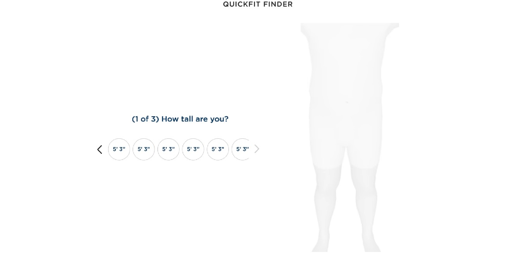
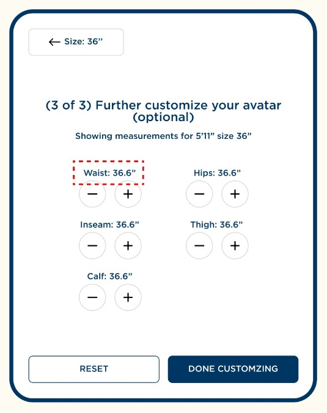
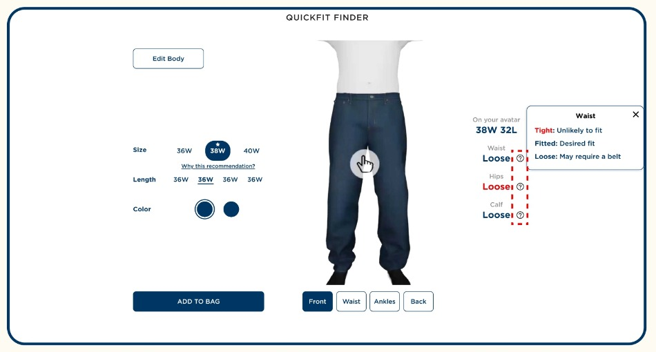
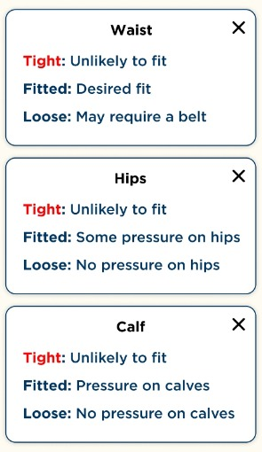

The final flow
Three short steps, then a size you can check.

1
Baseline input
(1 of 3) How tall are you?

2
Optional tuning
(3 of 3) Further customize your avatar

3
Explainable fit
A size on the avatar, with fit by zone
